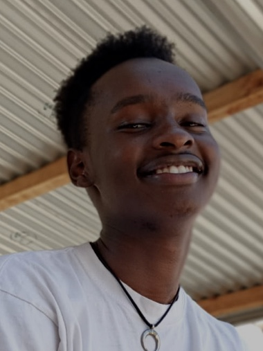

My name is DENNIS KIARIE and this is my portfolio.
Here is a list of projects i have recently done with a description about them
I was born in the year 2000 in Avenue hospital,parklands,here in Nairobi.
I started school at the age of 3years old where i joined kindergarden in ST.Elizabeth school(8.4.4).Later on,i shifted to Ongata Academy and progressed with my primary studies there until i did my K.C.P.E.
After completing my primary,i joined Lukenya Schools and completed my high school there.During the period between completion of my K.C.S.E and joining university i did ICDL(International Computer Driving License)in IAT college.I progressed with my studies in JKUAT university pursuing Construction Management.I am currently on my second year in JKUAT.
My intrest in Moringa School was influenced by some alumni students from Moringa School.They used to talk about how exciting it was in Moringa school and i saw them put into practise what they learnt.I got intrested in learning how to code and make website for myself,restaurants and such.
I regualarly play basketball and sometimes swim so as to keep fit.I also play video games and socialize with people during my free time.I also love love learning new things and solving problems generaally(like engeneering problems and computer problems!